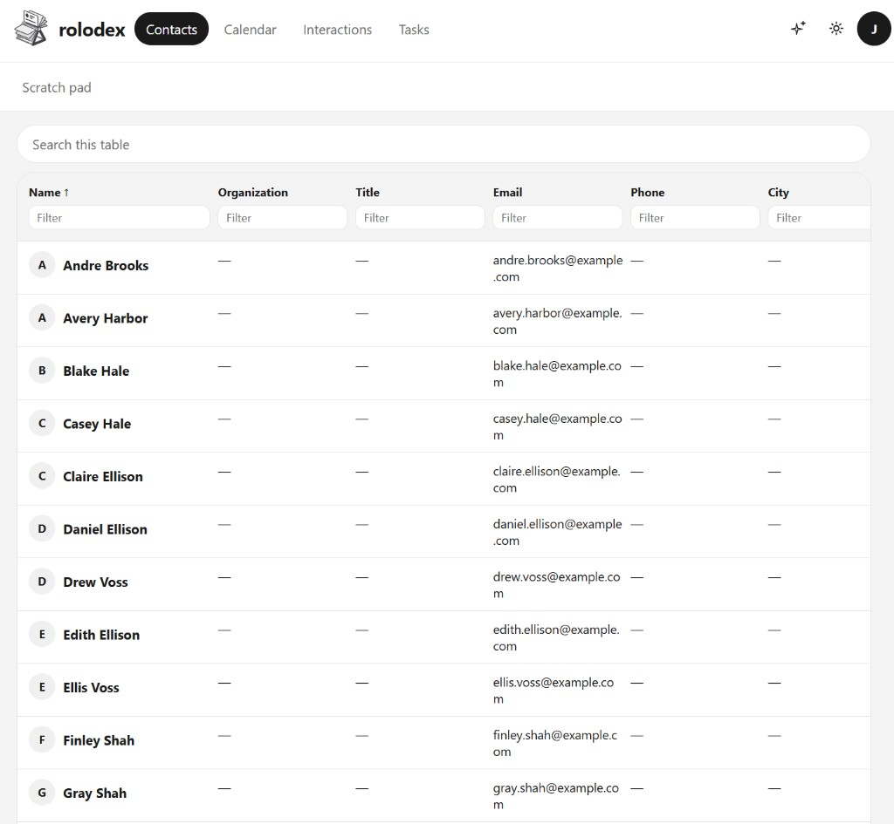
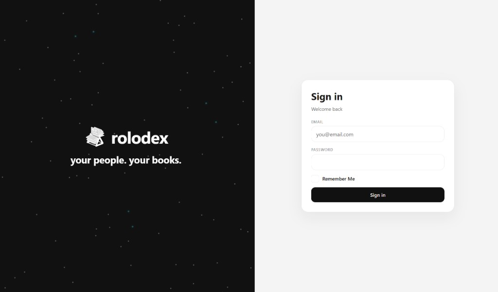

Shared contacts
Put a person in a user group with View or Edit. Several accounts can keep one shared record without cloning cards.
rolodex
your people. your books.
A self-hosted relationship manager for the people you know — with the history, calendar, and tasks that travel to your phone.
Features
Rolodex holds the address book, the calendar, the tasks, and the story of how you know someone — then syncs a clean copy to every device that speaks CardDAV or CalDAV. Share people with the household, and collaborate without handing over the whole book.

Put a person in a user group with View or Edit. Several accounts can keep one shared record without cloning cards.
Owner, Administrator, Editor, Contributor, and Viewer decide who can change people, events, and tasks.
Events and to-dos live beside the people they belong to. CalDAV keeps phones and desktops in step.
Each phone gets its own client password and last check-in. The website password never goes on the device.
The first visit creates the administrator. Registration stays invite-only until you open it under Admin → Security.
Optional authenticator apps or emailed codes once notifications are turned on.
Link Immich faces to contacts. Optionally pull an outside mailbox or calendar. Both stay off until you enable them.
Enable the add-on and point an AI client at /mcp for read-only contacts, relationships, and interactions.
Deleted people sit in Trash until restored or the retention window ends — then the next sync catches up.
Compare
Clay (now Mesh) captures a wide automatic timeline in the cloud. Monica is the classic open-source personal CRM. Rolodex is built for self-hosters who want phone sync and a living network on their own machine.
| Capability | Rolodex | Clay / Mesh | Monica |
|---|---|---|---|
| Hosting model | Self-hosted on your server | Hosted SaaS | Self-host or hosted |
| License | AGPL-3.0 | Proprietary | AGPL |
| Phone address book | CardDAV | Native apps & imports | Web-first (community clients) |
| Calendar & tasks | CalDAV on the same origin | Calendar import / sync | Reminders & activities |
| Relationship graph | Named ties + network map | Timeline & enrichment | Family & relationship links |
| Share & collaborate | Workspace roles + per-person groups (view/edit) | Team plans / shared intros | Multi-user on a shared instance |
| Data capture style | Deliberate records + optional mail/calendar check-in | Automatic capture from many accounts | Mostly manual, by design |
| Photos | Immich links (optional) | In-app media | Contact photos / attachments |
| Cost to run yourself | Your hardware only | Subscription | Your hardware only |
Clay rebranded as Mesh. Feature sets move; this table reflects the usual product shapes as of late 2026: cloud automation versus open-source personal CRM versus Rolodex’s self-hosted sync-first approach.
Install
Postgres and Rolodex. The published image is gallinij/rolodex:latest (built when a GitHub Release is published). That single HTTP port is the website, /api/, CardDAV, and CalDAV. Copy .env.example to .env, then pull or build.
cp .env.example .env
docker compose pull
docker compose up -dcp .env.example .env
docker compose up -d --buildname: rolodex
services:
postgres:
image: postgres:16-alpine
restart: unless-stopped
environment:
POSTGRES_USER: ${POSTGRES_USER:-rolodex}
POSTGRES_PASSWORD: ${POSTGRES_PASSWORD:-rolodex}
POSTGRES_DB: ${POSTGRES_DB:-rolodex}
ports:
- "127.0.0.1:${POSTGRES_PORT:-5472}:5432"
volumes:
- postgres-data:/var/lib/postgresql/data
healthcheck:
test: ["CMD-SHELL", "pg_isready -U $$POSTGRES_USER -d $$POSTGRES_DB"]
interval: 5s
timeout: 5s
retries: 20
rolodex:
image: ${ROLODEX_IMAGE:-gallinij/rolodex:latest}
build: .
restart: unless-stopped
env_file: .env
environment:
DATABASE_URL: postgres://${POSTGRES_USER:-rolodex}:${POSTGRES_PASSWORD:-rolodex}@postgres:5432/${POSTGRES_DB:-rolodex}
# Files live in the uploads volume. Set DOCKER_S3_ENDPOINT to use S3 instead.
S3_ENDPOINT: ${DOCKER_S3_ENDPOINT:-}
DATA_DIR: /data
API_PORT: 3000
CARDDAV_PORT: 3001
DOCKER_SITE: "true"
CARDDAV_BEHIND_PROXY: "true"
ports:
- "${PORT:-8080}:8080"
volumes:
- uploads:/data
depends_on:
postgres:
condition: service_healthy
healthcheck:
test: ["CMD", "node", "-e", "fetch('http://127.0.0.1:8080/').then((response) => process.exit(response.ok ? 0 : 1)).catch(() => process.exit(1))"]
interval: 10s
timeout: 5s
retries: 12
start_period: 40s
minio:
profiles: ["s3"]
image: pgsty/silo:RELEASE.2026-09-16T00-00-00Z
command: server /data --console-address ":9001"
restart: unless-stopped
environment:
MINIO_ROOT_USER: ${S3_ACCESS_KEY:-rolodex}
MINIO_ROOT_PASSWORD: ${S3_SECRET_KEY:-rolodexsecret}
ports:
- "127.0.0.1:${S3_PORT:-9100}:9000"
- "127.0.0.1:${S3_CONSOLE_PORT:-9101}:9001"
volumes:
- minio-data:/data
volumes:
postgres-data:
uploads:
minio-data:# Copy to .env, then edit the values marked required for production.
ROLODEX_IMAGE=gallinij/rolodex:latest
# --- Host ports ---
POSTGRES_PORT=5472
PORT=8080
# --- Database ---
POSTGRES_USER=rolodex
POSTGRES_PASSWORD=replace-me
POSTGRES_DB=rolodex
# --- HTTP ---
# PUBLIC_URL=https://rolodex.example.com
# --- Secrets ---
# Generate: node -e "console.log(require('crypto').randomBytes(32).toString('base64'))"
CREDENTIALS_KEY=replace-with-32-byte-base64
# --- Optional ---
# DOCKER_S3_ENDPOINT=
# GOOGLE_MAPS_API_KEY=
# MAPBOX_ACCESS_TOKEN=
# PLUGINS_DIR=
# BACKUP_DIR=./backupsVisit http://localhost:8080, or your machine’s LAN address on the same port. Change PORT in .env if 8080 is taken.
The first visit creates the administrator. Later accounts stay invite-only until you turn open registration on.
Use the same address you opened. On a domain, put a reverse proxy or Cloudflare tunnel in front and open the site once so Settings picks up HTTPS.
Configure
Everything lives in .env next to docker-compose.yml. Compose injects the database URL and data directory for the Rolodex service. Replace the sample secrets before the machine is reachable by anyone else.
Set these before docker compose up on a shared or public host.
| Variable | Default | What it does |
|---|---|---|
ROLODEX_IMAGE |
gallinij/rolodex:latest |
Image Compose pulls. Use a version tag for pinned upgrades, or build from this repository instead. |
PORT |
8080 |
One public HTTP port: website, /api, /carddav, and /caldav. TLS belongs to your proxy or tunnel. |
POSTGRES_USER |
rolodex |
Postgres role name. Compose builds DATABASE_URL from this, the password, and the database name. |
POSTGRES_PASSWORD |
rolodex |
Postgres password. Change it before exposure. If the volume already exists, update .env and Postgres together. |
POSTGRES_DB |
rolodex |
Database name created on first boot. |
CREDENTIALS_KEY |
sample local key | 32-byte base64 secret for encrypted credentials. Generate a new one for production. |
Most installs only need PORT. Set a public URL when phones should not use the browser origin.
| Variable | Default | What it does |
|---|---|---|
PUBLIC_URL |
unset | Public site origin when phones use a tunnel or DNS name, for example https://rolodex.example.com. Leave unset when the browser address is already correct. |
POSTGRES_PORT |
5472 |
Host port for Postgres on 127.0.0.1 — for backups and local tools. Inside Compose, Postgres still listens on 5432. |
API_PORT |
4100 |
Local pnpm dev only. Docker keeps the API on an internal port behind the gateway. |
CARDDAV_PORT |
4101 |
Local pnpm dev sync port. Docker serves CardDAV/CalDAV on PORT instead. |
WEB_DEV_PORT |
4181 |
Expo web dev server port. Unused by Docker. |
S3_PORT / S3_CONSOLE_PORT |
9100 / 9101 |
MinIO ports when you start the optional s3 Compose profile for local development. |
These matter for pnpm on your machine. Docker reads the browser origin unless you set PUBLIC_URL.
| Variable | Default | What it does |
|---|---|---|
DATABASE_URL |
localhost Postgres URL | Connection string for local processes. Docker overrides this to talk to the postgres service. |
PUBLIC_APP_URL |
http://localhost:4181 |
App origin during local development. |
CORS_ORIGIN |
local web ports | Browser origins allowed to call the API with cookies in development. |
COOKIE_SECURE |
false |
Set true when a local API is reached over HTTPS. Docker follows the forwarded protocol instead. |
EXPO_PUBLIC_API_URL |
http://localhost:4100 |
Dev server only. The Docker site calls /api on the same host. |
PUBLIC_CARDDAV_URL |
http://localhost:4101 |
Direct CardDAV URL for local sync testing. Public Docker installs use /carddav and /caldav on PORT. |
PLUGINS_DIR |
unset | Extra plugin folders. The project plugins/ directory and DATA_DIR/plugins are always read. |
Docker stores uploads on the uploads volume unless you point it at S3. Map keys are optional.
| Variable | Default | What it does |
|---|---|---|
DOCKER_S3_ENDPOINT |
unset | When set, Docker uses this S3 endpoint instead of the uploads volume. Compose maps it onto S3_ENDPOINT inside the container. |
S3_ENDPOINT |
http://127.0.0.1:9100 |
S3-compatible endpoint for pnpm development. Start MinIO with docker compose --profile s3 up minio -d. |
S3_REGION |
us-east-1 |
S3 region string passed to the client. |
S3_ACCESS_KEY / S3_SECRET_KEY |
sample keys | Credentials for MinIO or another S3 store. Also seed the optional MinIO service. |
S3_BUCKET |
rolodex |
Bucket name for uploaded files when S3 is in use. |
BACKUP_DIR |
./backups |
Where scripts/backup.sh writes dumps and upload archives on the host. |
GOOGLE_MAPS_API_KEY |
blank | Optional. Leave blank for OpenStreetMap. Can also be saved under Admin → Map. |
MAPBOX_ACCESS_TOKEN |
blank | Optional Mapbox token. Same Admin page can store it later. |
Generate a credentials key with
node -e "console.log(require('crypto').randomBytes(32).toString('base64'))".
After any port change, run docker compose up -d again.

Sync
Create a named client password under Settings. Sign in with your email and that client password — never the website password.
Ownership
Uploaded files live in the uploads volume. Backups are a Postgres dump plus a tar of uploads. An owner can also download a database dump from Settings when pg_dump is available.
Administrators can offer Authentik, Authelia, Keycloak, or another OpenID provider. Password sign-in stays available.
Workspace roles for the household, and groups so one contact can be shared for view or edit across several accounts.
Read the code, run it yourself, and keep modifications that you offer as a network service available to the people using them.